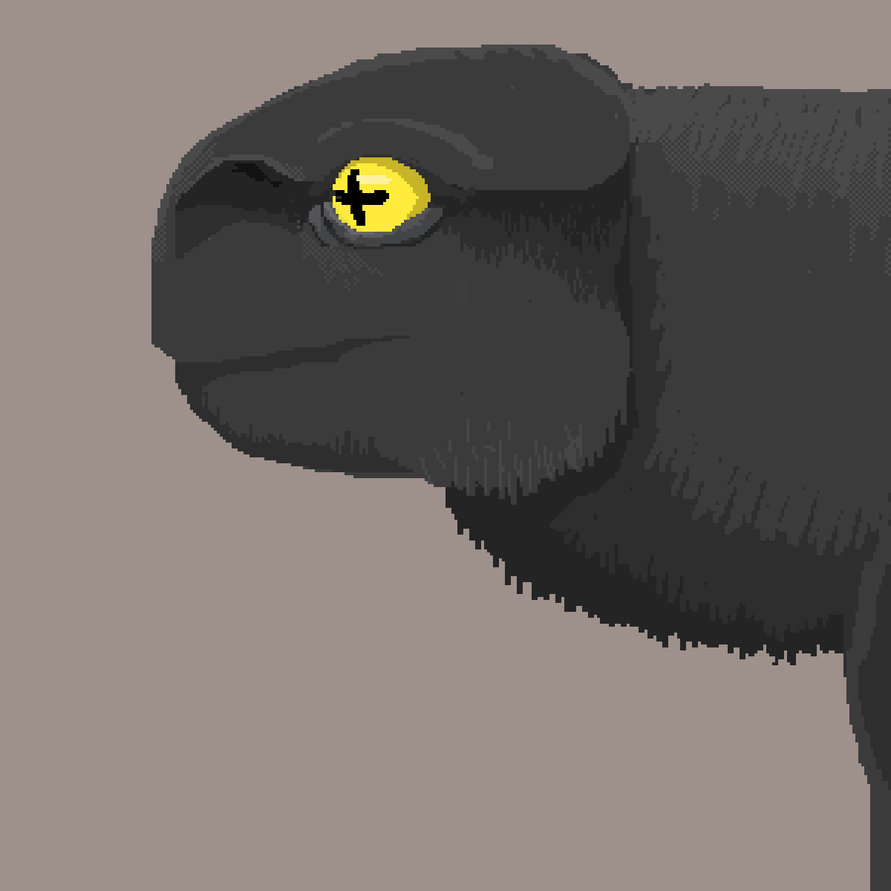
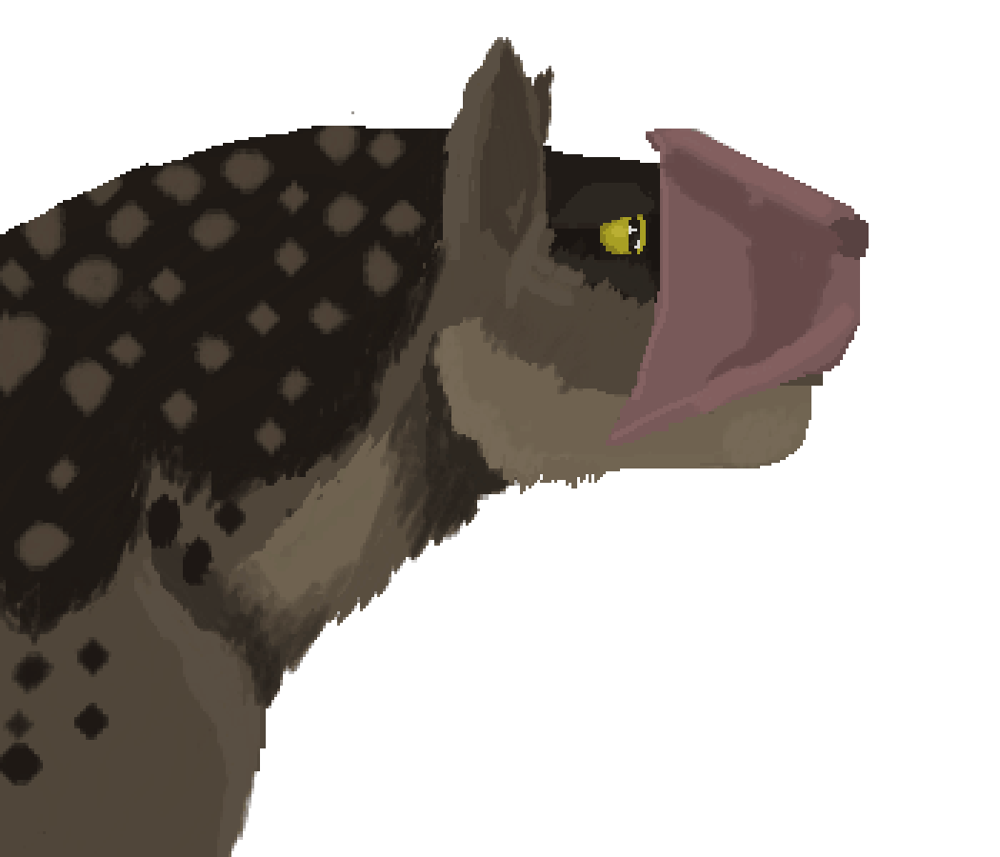

pseudo-mammal
/so͞odō/ˈ /maməl/
Adjective
Any non-earth animal that is mammal-like due to convergent evolution. Any animal that has two or more of the key mammalian features (fur, live birth, produces milk) and is not terrestrial in nature may have this label attacked to them
Nóttic
the demonym for the planet of Nótt. What the living creatures on Nótt is called
(main text)Fusce et varius erat, at mollis tellus. Nullam molestie, dolor vel bibendum ultrices, tortor nisl molestie sem, ac tincidunt nisl turpis non felis. Praesent iaculis neque at nisl vehicula pulvinar. Vivamus non laoreet sapien. In aliquam eleifend sapien quis posuere. Phasellus vitae est vitae ligula sodales accumsan at sed lorem
Phoenicopteri Capra
ulfur goats can be found by the geothermal ponds and near vents filter feeding off of the bacteria and brine shrimp-like pseudo-crustaceans found there.
their tough skin protects them from the toxic waters. Along with their wiery hair not growing in places of common contact. theorized to keep the fur from holding the irritating waters to the skin.
their flesh is also toxic and deeply unpleasant due to their toxic diet. So their bright coloring might be a sign to would-be preditors that they are inplatable, though faux-cats have been recorded hunting and eating Sulfur goats
Ille Lingua Diu Alta
oricant were the first pseudo-mammal defined and logged from Nótt their tall stature making them easy to spot on their flat home.
Loricant are non-discriminate eaters observed to eat the fruits of the Ambia and ambush hunt small animals, using its long sticky tongue as a lure.
Loricant are hermaphroditic living in communal herds of up to fifteen individuals. Musk Rutters and Sulfur goats tend to gather around Loricant as to use them as guard towers and protectors. Adult Loricants are generally too large and strong to be taken down by predators. crew
Leo Falsum Brunneis
this pseudo-mammal can be found prowling the rocks of the darker edges of the Nótt, it specializes in hunting Musk Rutters and sulfur goats.
they live in family clans of up to six individuals, composed a breeding pair and their cubs. the cubs live with the breeding pair for up to five years before leaving once reaching sexual maturity.
The Faux-cat has a fleshy "star" at the front of its face, used for both breeding displays and to help track its pray. The star is able to flip almost inside out and as shown below during displays it spreads wide across the face, engorging with blood displaying a bright red color.
Tum Figere Cervos Vespertilio
this pseudo-mammal can be found in the planes and rocky steps of the planet.
they are able to see minimal amounts of light and some color, the Bat-ear is very near-sighted and depends on echolocation for any object beyond its dependable area of sight.
They a single tooth outside of their mouth used to scrape their food mostly lichen and moss off of the rocky outcroppings of their homes.